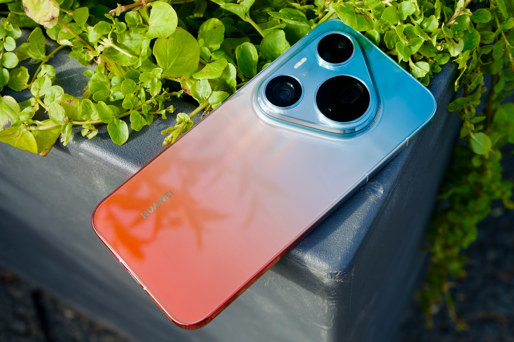

Yowl
YowlComprar um smartphone novo hoje em dia é quase como escolher um carro: são tantas opções, siglas e números que a gente se perde fácil. E a categoria dos intermediários (aqueles aparelhos que ficam no meio do caminho entre os básicos de entrada e os topos de linha caríssimos) é a que mais confunde. Afinal, por que um modelo custa R$ 1.500 e outro, aparentemente parecido, custa R$ 3.000?
Processador e Memória RAM: O "Motor" da Criança
Não adianta o celular ter carinha de moderno se ele trava até para abrir o WhatsApp. O desempenho do dia a dia depende diretamente de duas coisas:
- O Processador (Chipset): É o cérebro do aparelho. Em 2026, fuja de chips muito antigos. Nos intermediários, procure por linhas recentes da MediaTek (como os Dimensity) ou da Qualcomm (Snapdragon). Eles garantem fluidez e até rodam alguns joguinhos sem chorar.
- Memória RAM: Hoje em dia, menos de 6 GB de RAM é pedir para passar raiva com travamentos ao alternar entre apps pesados. O ideal para um intermediário duradouro são 8 GB de RAM (e alguns já aceitam até expansão virtual, mas a física é a que importa).
Armazenamento: Chega de "Memória Cheia"
Já se foi o tempo em que 64 GB davam conta do recado. Entre atualizações do sistema, fotos em alta resolução, vídeos e aplicativos gigantes, o espaço evapora rápido.
Regra de ouro: Tente não comprar nada com menos de 128 GB. Se você tira muitas fotos, grava vídeos ou guarda uma biblioteca de músicas offline, vale muito a pena investir em um modelo de 256 GB — especialmente porque a grande maioria dos intermediários atuais já não aceita cartão de memória (MicroSD).
Tela: Onde Seus Olhos Vão Passar o Dia Inteiro
Você vai olhar para essa tela por horas, então ela precisa ser confortável e bonita. Aqui os intermediários já deram um salto tecnológico absurdo:
- Tipo de Tela: Diga não às telas LCD antigas se puder. Procure sempre por AMOLED ou OLED. Elas entregam cores muito mais vivas, pretos profundos e gastam menos bateria.
- Taxa de atualização(Hz): Sabe aquela sensação de rolagem super fluida nas redes sociais? É o 120Hz em ação. Celulares com telas de 90Hz ou 120Hz dão uma aula de fluidez em comparação aos antigos 60Hz.
Câmeras: Megapixels Não São Tudo!
Cuidado com a armadilha do marketing que diz "Câmera de 200 MP!". Número de megapixels alto não significa foto bonita. O que manda de verdade na qualidade da imagem é:
- Estabilização Óptica (OIS): Se a lente tem OIS, suas fotos noturnas saem nítidas e os vídeos não tremem tanto. Esse é um diferencial que costumava ser exclusividade de topo de linha, mas já aparece em ótimos intermediários.
- Lentes secundárias (e as "armadilhas"): Muitos celulares colocam três ou quatro câmeras traseiras só para fazer volume. Na prática, duas delas costumam ser câmeras "enfeite" de 2 MP (macro ou profundidade) que quase ninguém usa. O que importa de verdade é uma boa lente principal e uma ultrawide decente.
Bateria e Carregamento: Quanto Tempo na Tomada?
De nada adianta um celular cheio de recursos se ele morre às 15h da tarde.
- Capacidade: Procure baterias na faixa de 5.000 mAh. É o padrão ouro para garantir um dia inteiro de uso moderado a intenso longe da tomada.
- Carregador na Caixa: Fique atento! Algumas marcas famosas já não mandam o adaptador de tomada junto. Além disso, veja se o aparelho suporta carregamento rápido (de 33W para cima faz uma diferença absurda na rotina corrida).
Atenção! Esses são pontos principais, mas sempre de uma pesquisada a mais em coisas específicas do seu interesse, seja fotos, jogabilidade do celular ou alguma outra área que faça sentido para você.

Perguntas:
- Tem pelo menos 8 GB de RAM e 128 GB/256 GB de espaço?
- A tela é AMOLED com boa taxa de atualização?
- O processador é recente?
- A bateria é de 5.000 mAh?
Se a resposta for "sim" para essas perguntas, pode ir sem medo: você encontrou um intermediário de respeito que vai te acompanhar firme e forte por vários anos! Boa sorte na compra tecnólogo!